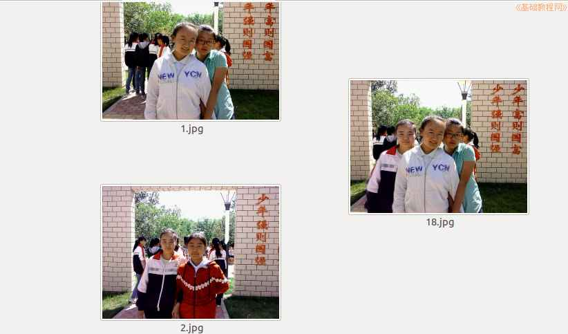

2014-2015 第一学期八年级图像处理教学设计
作者：TeliuTe 来源：基础教程网
十八、合并图像 返回目录 下一课
（一）教学设计
1、学习目标：gimp基本操作，图片处理，图像特效
2、注意事项：绕过弯来，既不要跳也不要落，一楼过了二楼
3、教学过程：
1）教师准备学案和板书；
2）学生整队进入，开机抄黑板上笔记；
3）教师讲解板书演示操作；
4）学生打指法、日志、完成操作；
5）教师打勾记录学生指法成绩，检查日志和操作；
注：学生抄完笔记就开始打指法、日志，老师讲完后再继续完成；
（二）板书设计(学生笔记)
18合并图像
1.准备好两个图片，用gimp打开
2.选择其中一个人物，粘贴到另一幅图片
3.调整大小、颜色，清除多余部分
4.用模糊工具使边缘柔和
操作图示：

（三）课后记
第18课学会合并图像
1、准备两个图片，颜色，邢台类似
2、选中其中一个，粘贴为新建图层
3、用缩放，移动，擦除，融入
4、调整亮度，细节，另存
--
2014年11月14日 星期五 19:15
--
接着上一节课的，这节课学习合并图像
把两个图片合并一下，比如你没去过长城，找一个背景把自己合进去
--
比如全班集体照，有同学没去，照了再合并进去
选图片的时候注意，选择颜色、形态比较相似的，难度降低
--
先看一下最终效果，合并好的图片，学生有个感性认识
再示范一下查看原图的绕弯，准备好两个图片
--
打开两个图片的步骤，学生就开始迷糊了，这个应该抄到黑板上
放在日志里，打完就忘记了，步骤放到笔记里面，理解放到日志里
--
选择的时候用剪刀工具，提醒一定要闭合，闭合的起点不太明显
选完要在中间点一下产生选区，前面做的时候，就容易忘，现在还有这样
--
粘贴的时候要粘贴为新建图层，平时应该把复制粘贴练一练
但是7年级也没找到合适的复制粘贴的反复练习，不像保存、另存这些每节课都可以练习
--
昨天4班的课数学老师要上，看意思是要占课一样，说是今天要开中考会
今天来语文老师下周五的课要换，下一周的课调到这一周上，有这样上课的吗
--
4班早上第一节语文课上了，数学课看来是没戏了，不知道到哪去了
下周五可能要去学习，到时候再看了，好好的课给调乱了
返回目录 下一课
本教程由86团学校TeliuTe制作|著作权所有
基础教程网：http://teliute.org/
美丽的校园……
转载和引用本站内容，请保留作者和本站链接。